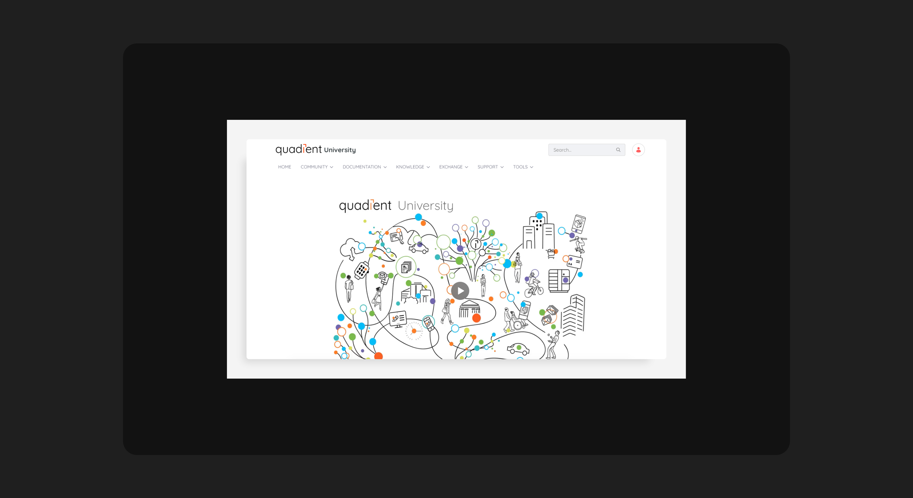
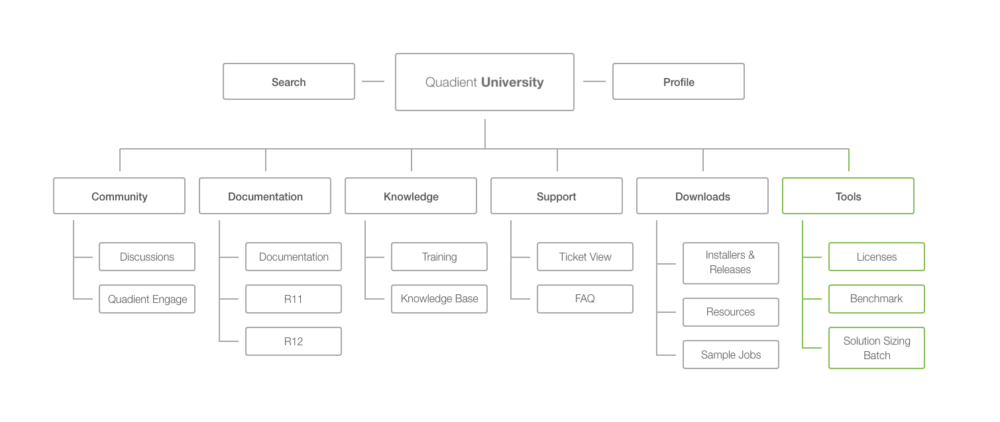
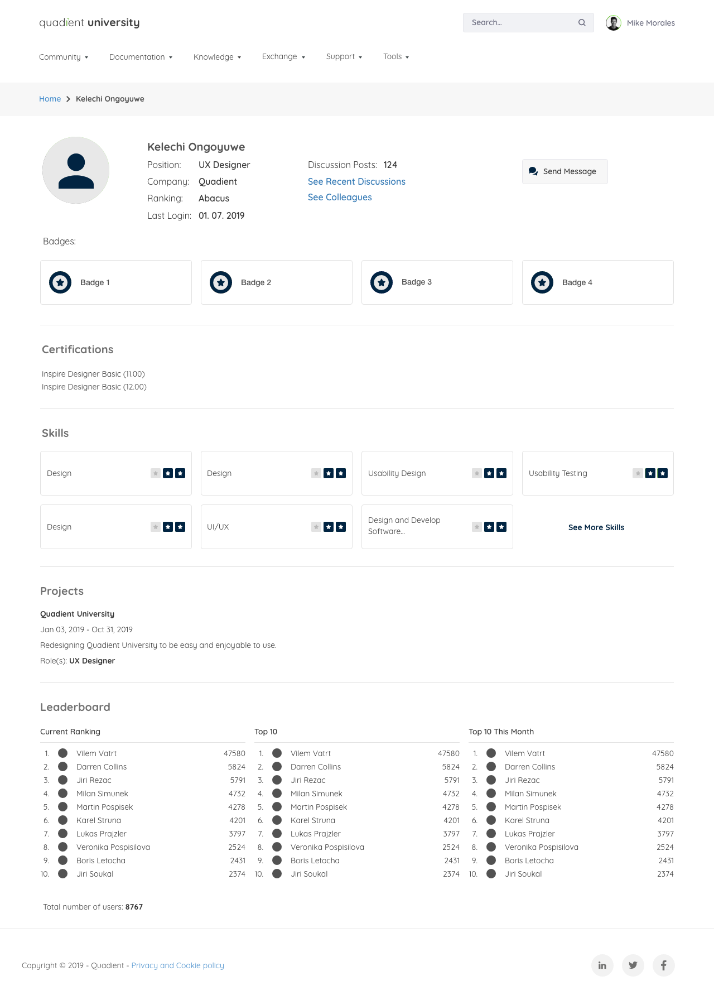
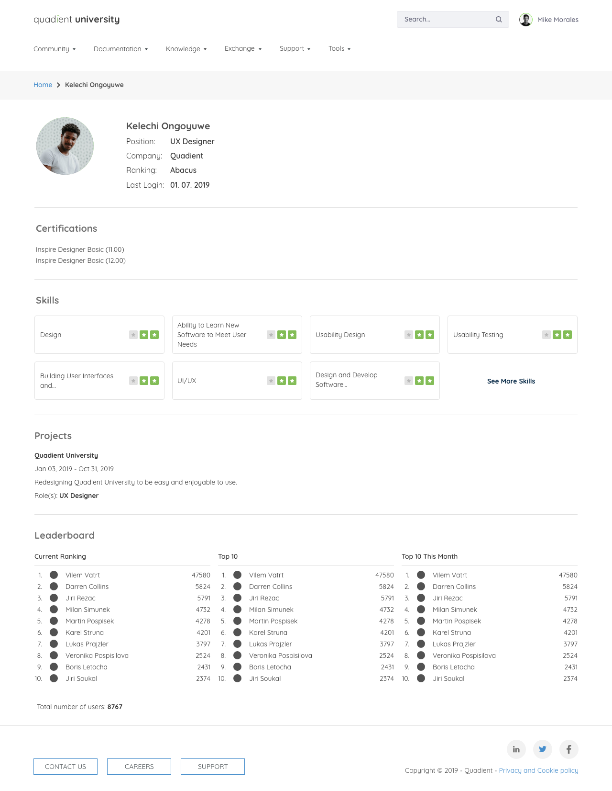
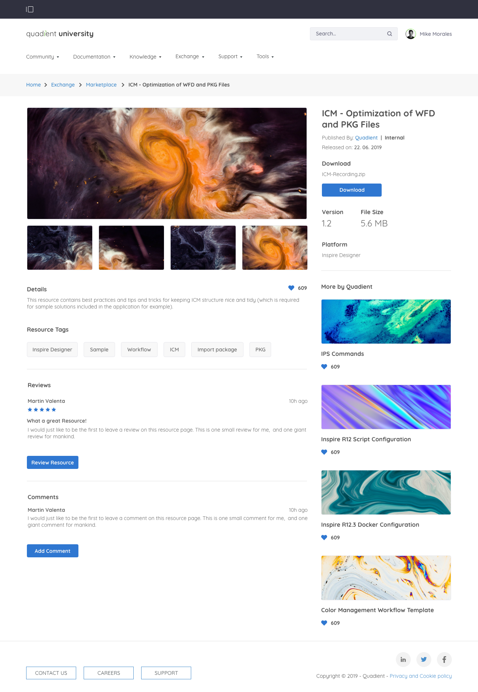
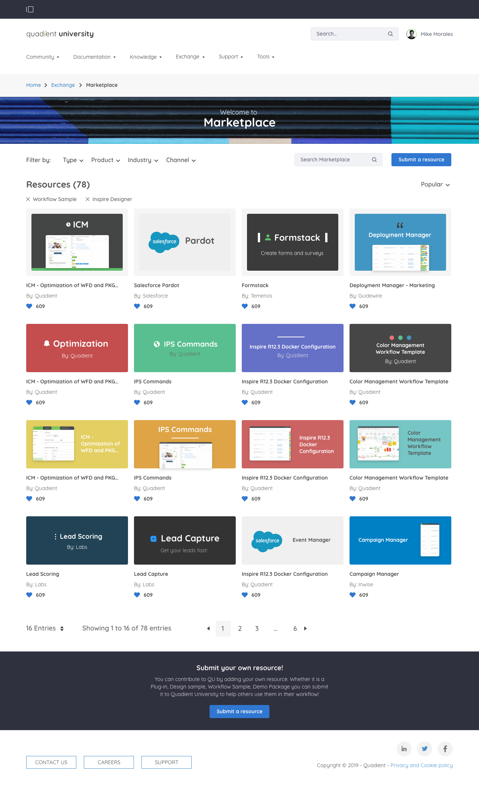
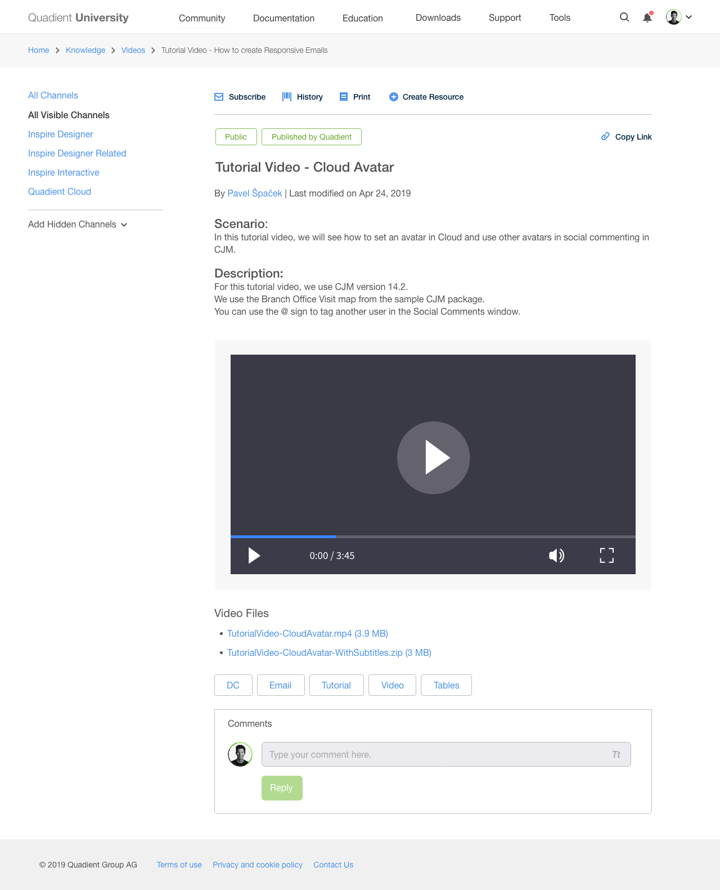
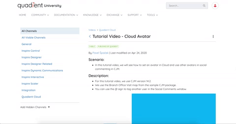

Overview
Role
UX Designer & Researcher
Team
1 UX Research Lead, 1 PM, 2 Developers, 1 Exchange Stakeholder, Graphics Team
Platform
Liferay CMS
Problem
Quadient University is the customer and consultant hub for questions, resources, and product documentation. A CMS migration to Liferay opened a window for a full redesign. Search had no loading feedback and could take up to 20 seconds. Key resources were buried. Profile and account settings were split across two disconnected areas. Link styling was inconsistent across three different colors. A migration was already in motion, which meant there was room to fix it.
Approach
I partnered with UX research lead Martin to run a site audit before touching anything. We cross-referenced known customer complaints from the PM with our own analysis of the site to identify where the real pain was concentrated. From there we narrowed a participant list for usability testing, spanning daily users to those who logged in once a month, and ran sessions with five people to pressure-test our assumptions.
Every participant was frustrated by the same thing: search gave no visual feedback, so users had no way of knowing whether the site was working or frozen. Four of the five couldn't locate a specific product installer. And users consistently mistook highlighted text for links, or ignored actual links because the color didn't register as interactive. The audit assumptions held up, which gave us clear ground to stand on when aligning goals with the PM.

Unifying the profile
One of the four goals coming out of research was to consolidate the fragmented user profile: account settings, profile details, and notification preferences were spread across different parts of the site. I set out to design a single destination where a user could find everything about their account.
Early explorations included surfacing earned badges and a direct messaging entry point on the profile page. Both were cut from this release due to time constraints. What shipped was a profile page covering the user's basic details, skills, projects, and leaderboard standing: a clean, unified view that replaced the fragmented experience entirely.


Exchange: new scope mid-project
Partway through the project, a new requirement arrived: a marketplace, later named Exchange, where customers could browse and submit resources for Quadient products: templates, configurations, demos, and samples, both company-made and user-generated.
I worked with the newly appointed Exchange stakeholder to define requirements and map the submission workflow. The core design question was how a user submits a resource, and what the approval process looks like on the back end. We landed on a flow where a user submits a resource, an internal administrator reviews and approves or rejects it, and the user receives a notification with the outcome.


Solution
Working within the Liferay framework meant designing around the platform's native components rather than from a blank canvas. I partnered with the graphics team to stay aligned with the existing style guide while pushing the visual direction as far as the framework allowed. The back-and-forth with developers was a consistent part of refinement, figuring out which native components could be modified and which required workarounds.
Three things shipped in this release: a unified profile page, the Exchange platform with its submission and approval workflow, and a dedicated video section with video support throughout the site. The sitemap restructure addressed the buried resources and disorganized navigation that had surfaced in research. Link styling was brought into consistency with a single, defined color system.


Outcome
The original Exchange proposal used a gallery-style layout to showcase submitted resources. It looked good, but it was built on an assumption that didn't hold: most users submitting resources didn't have multiple images to display, and many had none at all. The design had to be restructured to foreground the resource's details and description, with default images handling the cases where nothing was provided.
The project also changed how I approached working across multiple simultaneous products. At the time I was carrying responsibilities on two other products in parallel, which forced a level of deliberate communication with each PM that I hadn't needed to develop before. Delegation became a practical skill, and knowing when to hand something off kept things moving without sacrificing quality.
This release addressed the most significant issues with the previous version of Quadient University. It wasn't the final word on what the site could be, but it was a meaningful step toward a platform that actually reflected the product portfolio it was representing.